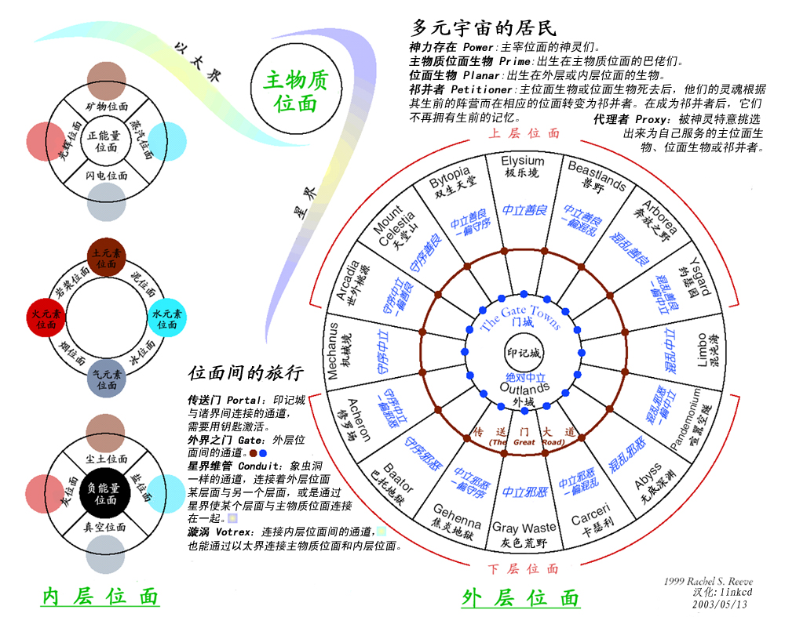

时间还早，再开一篇。先接着上一篇的话头，引用一句「革命导师」圣卡尔 的名言：「哲学家们只是用不同的方式解释世界，而问题在于改变世界 」。从这句话出发，形成了境内对「哲学」尤其是「红色哲学」的官方定义：「认识世界和改造世界的伟大工具 」。但是，如果咬文嚼字就会判断出，「改造世界」的责任，是「政治家」「工程师」的，反而不是「哲学家」「科学家」的工作，当然更不是「数学家」的义务 。
为什么要扯这一段，因为在奇幻背景下另外一套唯心主义公理体系的平行世界当中，虽然不能用「心想事成」形容，但是「意识」的作用仍然要比本位面强大许多。而这种作用，会在作品中以「伪·唯物主义 」和「真·唯心主义 」两个对立阵营的交锋当中体现出来。这两个阵营也不是捏造的，在其它一堆经典奇幻作品当中都有所表现。当然，肯定还会有「二元论」者企图和稀泥而被喷成「墙头草随风倒的投机分子」。
毕竟设定平行世界的人类也还是人类，与本位面没有生殖隔离，仅仅因为环境不同才导致人性「大同小异」而已。
如果理解不了这句话，可以参考许多人讨论过的脑洞：如果本位面忽然跳出来神灵，或者灵魂不灭被证实，社会将乱成什么样子？
其实不需要这种架空，哪怕以电子游戏类比：如何使用开挂的角色或者动辄三十条命可供挥霍的角色？
那些「玩家 」的表现就是「人性 」的体现。
但是，本位面几乎所有人都不认为存在的意义就是「游戏人生」，爽一把就走，不认为这辈子就是「玩家」为了满足精神需求而发泄的过程，以「通关」为最高纲领，最不济还能「死去之后重头再来」。有些宗教的教义，包括但不限于「轮回转世」，也不是从个人角度出发给予「玩家」自由的定义。所以，在一个灵魂真实存在的设定当中，如何寻找两种人生观的平衡点，是作为「精神病仆街写手」的我的关注重点。
换句话说，在「灵魂不灭」的前提下，需要定义灵魂的「活性」和「自由」。也就是说，作为「数学结构」的意识，虽然是「绝对存在」，但未必「活跃」。至于谁导致灵魂「活跃」起来，怎么个「活跃」法，不同阵营应该有不同的立场，或者归功于「第一推动」，或者认定「永远运动」。
无论哪一种，「灵魂不会死，只会慢慢的消失 」这种观点，是设定的大前提。
如果要「本土化」，那就是前面提到过的胡宏 「心无死生 」观点。本来是整个思想体系的精华，结果被一不留神看走眼的「得意门生」张栻 勾结人品低劣但背后不远万里从「三洲通衢」偷渡入境的赞助商「有錢是真的能為所欲為的.gif 」于是可以上下打点关系「一力降十会」肿着脸混成学术带头人的「钦定学霸」朱熹 狼狈为奸蛇鼠一窝欺师灭祖 的暗箱操作「亦当删去 」了。
可以用本位面唯物主义科学家获得的唯物主义结论类比，就是「人造生命」相关研究。在十几年前我看到过报道，说已经可以在分子层次上合成病毒，与自然界存在的病毒一模一样，但就是没有「活性」，而结论是「科学界信教比例逐步上升」。后来一直没有再看到相关报道，不知道进展到哪一步了，还是长期没有进展于是终止这方面研究。先不考虑外行记者出于各种目的带节奏的动机，只看这个「事实」（存疑中）本身，也可以判断出，「存在」与「活性」是两个概念，不能混为一谈。所以，这个唯物主义证据，就是我设定时用来当幌子而扯起的一面大旗。
而这个观点，在本位面也真实存在过，就是如今已经被当作「伪科学」的「活力论」。这种观点因为有机化学和生物化学的进展，在人工合成尿素之后就逐步式微，在人工合成胰岛素之后就销声匿迹。但是迄今为止人工合成生命尚未取得突破，于是来自神棍的「侵犯上帝领域」之类指责又开始冒头。不评价学术圈内撕哔，只看这个「活力论」的主张，可以作为奇幻背景下「生命系」法术的基本出发点。
也就是说，用唯物主义的措辞形容，「活力」或「生命力」，是平行世界的「基本力」之一，无论用「神の恩赐」还是「位面本源」解释，都可以认为是设定当中「公理」。在这个基础上，可以继续设定『生命力＋正能量＝正常生物 』『生命力＋负能量＝亡灵生物 』。而「生命力」单独的表现形式，就是「铸造族构装体」之类「疑似人造生命」，包括但不限于傀儡、石像鬼、魔像之类奇幻作品常见内容。
注意，到这里，仅仅用「生命力」解释了「肉体」的「活性」，也就是本位面「伪科学唯物主义」和设定中「伪·唯物主义」的观点。而「灵魂」或「精神」到底是什么，其「活性」原理如何，仍然没有解释，这也是设定中准备让角色们探求真相的过程。
对于「意识」和「灵魂」的解释还要单独考虑，因为西幻中有「元素生物」的存在，也有「智能构装体」的存在。先不提「自由意志」（西幻里还有「契约」之类对吧），灵魂到底算什么，是否必须（哪怕是曾经）有能力降临到「肉体」之上的「意识」，目前流行的各套背景和设定还没有统一。
至于最终是否会归结为我主张的「数学结构意识论」，仍然没有定论。因为目前我的观点当中，仍然把「自由意志」总结为「元元……元……宇宙」本身的「存在」，倾向于「永远活动」顶多「暂时休眠」。但我是通过引入公理并自洽的方式「回避」的，在「证明」上并没有进展。
补充一点细节。对于骷髅丧尸之类东西，汉语语境当中称呼为「亡灵」或「死灵」，而在西方原版语境当中，偏偏是「不死」（undead ）。这种翻译之后与本意截然相反的措辞，不能简单的用「技术问题」糊弄过去，只能归结到「文化差异」之上。也就是说，西方意识形态认为「能动的东西就是活的」「不能动的就是死的」，而我中华兲朝上国本土出品的「僵尸」，仍然是死的，哪怕不是被「赶尸专家」指挥而是「出于本能」而活动。这个微妙差别，恰好反映了不同文化背景对于「生命力」相关概念的理解不同。
长话短说，贴一张DnD 「异度风景 」多元宇宙的概况图：

「异度风景」各位面
这是目前境内西幻题材网文当中最流行的背景。而即便在西方，与之竞争的设定也有不少，虽然都有一定的合理性和可取之处，综合起来考虑还是四元素加正负能量的设定，与本位面西方意识形态的基础「古希腊哲学」更为贴近。于是，使用这个图左侧关于元素、能量和位面的关系进行衍生，既不是「跟风」也不是为了避免「侵权」，而是从「已经进入公共领域的共识」出发，赋予更多的意识形态内涵。
比方说，在「披着奇幻皮的科幻」类型作品中，几乎都采用了攀科技树的大纲，照搬了本位面第一次和第二次技术革命。而在真正的奇幻设定中，比如这一套，既有「蒸汽准位面」也有「闪电准位面」，于是对应本位面两次技术革命的物质条件，本来就存在于设定的「公理体系」当中。因此，可以把精力集中到相应社会环境当中「人」的描写之上，而不是罗列技术名词甚至照抄各种手册。
在第三篇设定当中已经提到了「电力」，就解释为「气元素和正能量的相互作用」，这是应用架空世界观的示例。在这个设定之下「电」就是简单的聚集元素而已，数量不够还可以「联通位面」，这是西幻常见的套路。至于这「电」是否能够稳压稳流于是建立电网推动主物质位面进入电力时代……那就是需要作者考虑的问题了。而DnD 的「艾伯伦 」（Eberron）模组，是以本位面十九世纪维多利亚时代为原型的，已经给出了以「魔力」简单替换「电力」的架空演绎推理结果，当然在写手看来合理与否另说。
而这个「多元宇宙」的「万事皆三 」公理，前面提到了可以用胡宏 思想进行「本土化」：「一陰一陽之謂道。有一則有三，自三而無窮矣 」。其中『阳＝正能量』『阴＝负能量』很好理解，这就是「道」嘛。那么「三」呢？「无穷」呢？
无穷的事情另说，这个「三」倒是很简单，就是「阴阳中」的三进制，正好可以与「异度风景」多元宇宙设定对应上。本位面苏联就搞过三进制计算机，于是哪怕涉及到「机器人」、「人工智能」，现实素材也应有尽有，连算法说不定都能直接搬来用。
细节上，可以把「八卦」横过来，在字符集里面挑点「↑|↓ 」之类符号表示，于是两位数就是「九卦」、三位数就是「二十七卦」，四位数就是「八十一卦」……已经比易经要多了。而卦辞爻辞之类就不能随口乱编，要尽可能借鉴「东方传统」，似是而非的用翻译腔表达「玄学」，这本来也就是《易经》的风格嘛。
还要尽量使用欧洲语言的熟语格言，比方说当初我在网上发言写这段话的时候刚好外面正在下雨 ，象征「坎」卦 ，而「象曰：习坎入坎，失道凶也 」，可以胡诌几句之后用表示瓢泼大雨的「下猫和狗（rains cats and dogs ）」编进去，再继续胡诌。
而这个英语常用短语的典故，在网上也能搜到：
《词汇短语起源故事百科全书》（Facts on File Encyclopedia of Word and Phrase Origins ）中收录了对其起源的一种解释。书中说「17 世纪的英格兰在下大雨的时候，一些城市的街道就会水流成河，而且这些污水中还会飘浮着大量的死猫死狗」。
During heavy rains in 17th century England, some city streets became raging rivers of filth carrying many cats and dogs.
布鲁尔 在其所著的《成语寓言大辞典》（Dictionary of Phrase and Fable ）中说，这个短语起源于北欧：「在挪威的神话中，猫被认为可以影响天气。驾着风暴而来的女巫据说就是化身为猫的。」 而狗和狼则是风暴神欧丁 的随从，其中狗是「风的象征」。
In Norse mythology, the cat is supposed to have great influence on the weather. Witches that rode on storms were said to assume the form of cats. Dogs and wolves were attendants to Odin, the god of storms, and the dog is a signal of wind.
关于这个短语起源的另一种说法是说它来源于一个古老的法语词catdoupe ，这个词的意思是waterfall or cataract 。而法语中catdoupe 的发音和cats and dogs 有些相像，所以就有了to rain cats and dogs 。
最后，单独的cats and dogs 这个短语有自己的用法，意思是「价值低的股票, 不值钱的、卖不掉的商品」（low priced, highly speculative stock ）。这种用法1879 年开始出现，1984 年在《纽约邮报》中就曾出现过这样的用法。
这只是在网上随便搜的，已经出现了「女巫」「风暴神」「奥丁」之类奇幻因素。而手头有工具书或者查询专业网站知识库，还会有更多更详细更深入的解释。那么完全可以「思路广欢乐多」，这么发散思维，一本正经说胡话，其「玄乎其玄」的程度不比易经逊色。
并且就看网上每天那许多活跃色目灌水机放风带节奏，猫啊狗啊其它什么建国以后的动物有得是，「下大雨就满街死猫死狗」「价值低卖不掉」这种段子，完全可以毫无痕迹的嵌在正文里面随意发挥直抒胸臆写得神完气足嘛。
当时咱吃饱了回来之后，应景随手写了点段子举例：
首先是此处应出现雨势磅礴状描写若干字 ，不提了，然后是一堆场景，比方说：
这是一幢伟大的教堂，里面有个光荣的祭坛，在正确的位置上站立着一个神圣的牧师，浑身都充沛着正义的气息。牧师听着震耳欲聋的雷声、看着划破天空的闪电、感受着扑面而来的雾气，忽然板起一张忧国忧民的脸，作久经考验状：“猫狗降临，失道凶也”。
一座魔法塔里的一个魔法实验室里，摆着一张魔法写字台，上面铺着一张魔法桌布，放着一个魔法台灯。一个魔法学徒正翻开一本魔法书，拿着一支魔法笔蘸着魔法墨水在一张魔法卷轴上认真抄写。也不知抄了多久，魔法学徒长出了一口气，把魔法笔尖上的残留的魔法墨水擦干，收进魔法文具盒里面，合拢魔法书，卷起魔法卷轴，摘下魔法眼镜，揉了揉因为魔法而酸痛的眼，按了一个魔法按钮，关闭了静默魔法阵。外面的雨声传进耳边，魔法学徒摇了摇头：“猫狗降临，失道凶也”。
一间××××的卧室，充满××××的气息，一张××××的大床上面有个浑身××××的女人，一只手离开了××××，上面还沾满了××××的××××，散发着××××的光泽。女人侧耳听了听外面的动静，×××的笑了起来：“猫狗降临，失道凶也”。
上面这几段都是给配角至少是龙套准备的，其实还可以写点“大时代的小人物”：
“猫狗降临，失道凶也”，一个裹着斗篷戴着斗笠愁眉苦脸的人站在一块写着“深入领会×××系列重要讲话精神，建设海绵型城市”的广告牌旁边，看了看不远处排了一长串的马车，叹了口气，继续低头伸出挠钩，从掀开篦子的排水井里面捞出死猫死狗甩到路边，低声嘟囔，“环卫工人一声吼，阴沟也要抖三抖”。
“猫狗降临，失道凶也”，一个穿着带兜帽长袍的家伙，站在一间阴暗的地下室里面，右手抓着一截嵌满了贝壳的木柴，左手捧着一本封面上歪歪扭扭写着“大预言术”四个字的硬皮册子，兴奋得手舞足蹈，“我！西肃慎代天启运后清诸上神圣千年上等开明大帝国太祖威武文圣德仁昭明高贤景匡弘皇帝！说了：讨厌的人都要死！”
“猫狗降临，失道凶也”，一个穿着皮甲的彪形大汉声嘶力竭的大吼，凶狠的盯着眼前这一排同样穿着皮甲的人，“去找块黄布，要干净点的；抓一条大鱼，要活的；找块石头，凿个独眼石人，要快……对了，老吴，你会学狐狸叫么？”
然后，就要考虑到知识积累还不那么极大充沛的写手，如何模仿《易经》胡诌这么一大堆卦辞爻辞，也不是简单可以做到的事情。于是，提供了「已经进入公共领域」的素材，我中华兲朝上国悠久灿烂的历史当中发达的玄学传统之托名东方朔 的经典名著：《灵棋经》。
就是十二个钢镚，背面都一样，正面有「上中下」三种情况，各四枚，于是排列组合一共125 卦。很明显在创作过程中「借鉴」了《易经》。
注意，无论是《易经》还是《灵棋经》，每一卦的概率不一样，纯数学问题，不解释了。比方说按照《易经》的五十根草棍方式进行，各卦不是等概率；而按照民间简易版的三个铜钱扔将起来，就是等概率。这也是今后设定当中会提到的，涉及了唯物主义频率学派和唯心主义贝叶斯学派的「学术纠纷」。
这一篇虽然不全是开场白，但全是铺垫，结果原本预定注释正文开头那一段「终焉之沙发」场景的工作，又只能放到下一篇去了也。